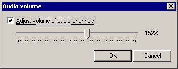

VirtualDub help - Dialogs: Audio volume | |||||
| On a crash... Dialogs: Video filtersVideo frame rate control Video color depth Video range Video compression Audio filters Audio interleaving Audio compression Audio conversion Audio volume Capture settings Capture preferences Capture volume meter Preferences |  Permits volume adjustments to audio, to make the audio louder or softer.
| ||||